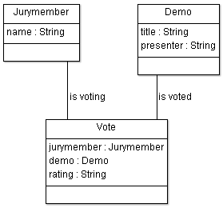
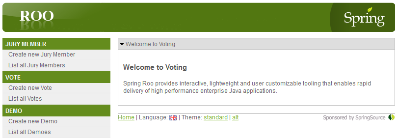

Tutorial
The best way to learn about Roo and our addon is to try it out. To provide you some guidance in this process, we prepared the following tutorial. Following this tutorial, you will learn how to
- Create a web application using Roo
- Configure your web application for deployment to SAP HANA Cloud
- Deploy and start your web application on SAP HANA Cloud
In order to follow the tutorial, please make sure that you already have installed Roo as well as downloaded and installed our addon. Please refer to Setting up Roo and addons for instructions on how to do the initial setup.
Get your hands dirty - starting the tutorial
What we will do in the following is to create a small web application for managing votes at a demo event. At such an event several presenters show their demos, which are then judged via votes by jury members.
To get started with our web application, we open the commandline and create a new, empty folder named demo. We then move into this folder and start Roo. If you are using Windows, you need to execute the following commands:
c:\>mkdir demo
c:\>cd demo
c:\demo>roo
____ ____ ____
/ __ \/ __ \/ __ \
/ /_/ / / / / / / /
/ _, _/ /_/ / /_/ /
/_/ |_|\____/\____/ X.Y.Z.RELEASE [rev abcdef0]
Welcome to Spring Roo. For assistance press TAB or type "hint" then hit ENTER.
roo>Now issue the following commands on the Roo shell to do the initial setup of our web project:
project --topLevelPackage com.sap.research --projectName voting
persistence setup --provider ECLIPSELINK --database HYPERSONIC_IN_MEMORYThe first command tells Roo to setup a project named voting having the top level package com.sap.research for our java classes. The second command sets up the kind of persistency we want to use to store our data. The first parameter tells Roo to use Eclipse Link as JPA provider. Using Eclipse Link is the standard for HANA Cloud. The second parameter specifies that we want to use a HSQLDB that stores data just in memory. This is great for local testing, as we do not need to setup a database server. Later on you will see how easy it is to switch to HANA Cloud's persistency service to really store our data.
Defining the data model
After the initial setup, we need to think about which entities should be managed by our application. For our exemplarily chosen voting app, the following data model seems to be sufficient:

We have three entities:
- a
Demothat has a title and a presenter, - a
Jurymemberthat has a name, and - a
Votewhich has a rating and is referencing the jury member that is giving the vote as well as the demo that is voted.
To define this data model in our Roo project and let Roo create all the necessary Java classes with according persistency handling for us, issue the following commands on the Roo shell:
entity jpa --class ~.domain.JuryMember
field string --fieldName name
entity jpa --class ~.domain.Demo
field string --fieldName title
field string --fieldName presenter
entity jpa --class ~.domain.Vote
field reference --fieldName jurymember --type ~.domain.JuryMember
field reference --fieldName demo --type ~.domain.Demo
field string --fieldName ratingCreating the web UI
To be able to manage our entities, we let Roo create a web UI for us, that provides all CRUD operations (create, read, update, delete). We do this, by issuing just two commands on the Roo shell:
web mvc setup
web mvc all --package ~.controllerThe first command configures our project to use the Spring MVC framework as a base for the web UI. The second command creates controllers (enabling the CRUD operations) for all of the entities defined by us.
That’s it! We have created our web application using Roo and may now exit the Roo shell using the exit command. This brings us back to the commandline.
Compile and start locally
Now it’s time to compile and run our created web application. As Roo creates standard Maven projects, we can now use Maven to compile our app, package it to a WAR file, download and start a Tomcat application server for testing, and deploy our WAR to the Tomcat. And we can do all this with just one command on the commandline:
mvn package tomcat:runAs soon as the Tomcat application server is up and running you should see the following line on the commandline:
INFO: Starting Coyote HTTP/1.1 on http-8080To access our voting web application, open your favorite web browser and go to the following URL:
http://localhost:8080/votingYou should now see the voting web application:

Feel free to experiment a bit with the application, e.g. by creating a demo, a jury member, and a vote for the created demo and jury member.
Move it to the cloud
Deploying and running on SAP HANA Cloud
Up until now, we created our web application and tested it locally. Now, we want our application to run in the SAP HANA Cloud and also to store its data there. To achieve this, we will use our addon to do two things:
- Integrate a special maven build plugin to the project, that will ease deployment to the SAP HANA Cloud.
- Configure JPA persistency settings of the project to use HANA Cloud's persistency service for data storage.
To configure the project in this way, start Roo and issue the following two commands on the Roo shell:
nwcloud enable-deploy
nwcloud enable-jpaNow exit Roo and use Maven to build the web application.
mvn clean packageIf you look at the output Maven creates at the end of the build process, you should now see some additional helpful notes about how you can deploy and run your web application to/in the SAP HANA Cloud:
...
[echo]
[echo] WAR file created
[echo] ================
[echo]
[echo] Your application has been packaged to a WAR file:
[echo] c:/demo/target/voting-0.1.0.BUILD-SNAPSHOT.war
[echo]
[echo] What to do now?
[echo] ---------------
[echo]
[echo] You could use the NWCloud-Maven-Plugin now to deploy your
[echo] app to SAP HANA Cloud, or test it on a local instance.
[echo]
[echo] To use the NWCloud-Maven-Plugin, type
[echo]
[echo] mvn nwcloud:<goal>
[echo]
[echo] where <goal> is one of the following actions:
[echo]
[echo] deploy -> Deploy WAR as app to cloud
[echo] start -> Start app instance on cloud
[echo] stop -> Stop app instance on cloud
[echo] undeploy -> Undeploy app from cloud
[echo] status -> Show status of app on cloud
[echo] apps -> Show apps deployed on cloud account
[echo] comps -> Show components of deployed app on cloud
[echo]
[echo] deploy-local -> Deploy WAR to local cloud server
[echo] start-local -> Start local cloud server
[echo] stop-local -> Stop local cloud server
[echo] clean-local -> Delete WAR from local cloud server
[echo]
[echo] usage -> Show usage info and currently used settings
[echo]
...Setting the deployment options
For the next step it is important that you adjust the file nwcloud.properties that has been created by our addon in the project’s root directory. In this file you need to define
- your SCN user (to be able to access SAP HANA Cloud),
- the desired target of deployment, and
- the location of the SAP HANA Cloud SDK.
SCN user and free developer account
If you do not have access to SAP HANA Cloud yet, please register a user at SAP Community Network (SCN) and follow the steps explained here to get a free developer account.
Now use the text editor of your choice to open nwcloud.properties, and set your SCN user (password is optional) in the following lines:
# -----------------------------------------------------------------------------
# SCN user (and password)
# -----------------------------------------------------------------------------
# - user: SCN user (as registered at http://scn.sap.com/)
# - password: Password of SCN user. If not specified here or (encrypted) in
# Maven settings, it will be queried on the commandline each time needed.
user=myscnuser
#password=myscnpassword(Note: It is possible to use encrypted passwords from Maven settings here. Further information can be found in section "Using encrypted passwords" of appendix here.)
Define where to deploy the web application by adjusting the following lines:
# -----------------------------------------------------------------------------
# Target for deployment (host, account, application)
# -----------------------------------------------------------------------------
# - host: The target platform to deploy to (e.g. https://hana.ondemand.com)
# - account: The account to deploy to
# - application:
# - Name/ID of the application to deploy (non-empty, alphanumeric, lowercase
# letters, starting with a letter, max. 30 characters).
# - If not specified, the maven project name in lowercase letters will be used.
host=https://hana.ondemand.com
account=myaccount
#application=myappHint
If you are using the SAP HANA Cloud free developer account then the host is
https://hanatrial.ondemand.com
Finally make sure that the following line is pointing to the directory where you have installed the SAP HANA Cloud SDK (Neo SDK) to (cf. section "SAP HANA Cloud SDK" of the initial setup instructions).
# -----------------------------------------------------------------------------
# Location of Neo SDK
# -----------------------------------------------------------------------------
# - Download Neo SDK from: https://tools.hana.ondemand.com/
# - Extract Neo SDK to a directory and specify its path in sdk.dir setting.
# - Windows users: Please use double backslash instead of single backslash (e.g. c:\\Program Files\\Neo-SDK)
# - Linux/Mac users: Just use normal slash as usual (e.g. /home/myuser/bin/neo-sdk)
sdk.dir=c:\\Program Files\\Neo-SDKIf you are behind a proxy, then proxy settings will tried to be autodetected from environment variables. If you experience any problems with network connectivity, e.g. when deploying your app, try to uncomment the following parameter and set the proxy settings manually. This can be done here:
# -----------------------------------------------------------------------------
# Proxy settings for Java Virtual Machine
# - Proxy settings are tried to be autodetected from environment variables.
# - If you are behind a proxy and autodetect does not work or you need to override the settings, this can be done here.
#sdk.proxy=-Dhttp.proxyHost=proxy -Dhttp.proxyPort=8080 -Dhttps.proxyHost=proxy -Dhttps.proxyPort=8080 -Dhttp.nonProxyHosts="localhost|127.0.0.1" -Dhttps.nonProxyHosts="localhost|127.0.0.1" -Dhttp.proxyUser=proxyuser -Dhttp.proxyPassword=proxypassword -Dhttps.proxyUser=proxyuser -Dhttps.proxyPassword=proxypasswordAfter we have setup the deployment options, we can now perform the actual deployment as explained by the help text. We can use the Maven commands nwcloud:deploy for deployment to HANA Cloud and then use nwcloud:start to start up an instance in HANA Cloud to run our web application. And as Maven allows to write sequences of commands we can do this using one line:
mvn nwcloud:deploy nwcloud:startDepending on the speed of your network connection, the process of deploying and starting up the instance may take a few minutes. Finally, after the instance has successfully been started, you should see lines like the following ones:
...
[java] web: STARTED
[java]
[java] URL: https://votingmyaccount.hana.ondemand.com
[java]
[java] Access points:
[java] https://votingmyaccount.hana.ondemand.com
...After successful deployment and startup of the instance, we can now access our web application in the SAP HANA Cloud. To do this, we need to append a slash / and the name of the web application at the end of the URL that is shown on the console after the startup of the instance. As the web application in our example is called voting we use the following URL in our favorite web browser to access it:
https://votingmyaccount.hana.ondemand.com/votingIf you now enter data like demos, jury members, and votes into the web application, this data will be stored using the persistency service of the HANA Cloud. So you can shutdown and then restart the instance, and the data will still be there, as it is stored independently from your web application in a database on the HANA Cloud.
Congratulations
That’s it!
You just created your first web application using Roo and successfully deployed it to the HANA Cloud platform - and all this in just a few minutes!
What you could do now:
- Import the Maven project into an IDE like Eclipse or STS and start modifying or extending it.
- Create a mobile app that uses the web application as a backend by pushing/pulling data to/from it in JSON format using its REST interfaces.
- Go to the Roo website and find out more about Roo.
- Check out our Roo addon for SAP NetWeaver Gateway to integarte entities from SAP NetWeaver Gateway systems.